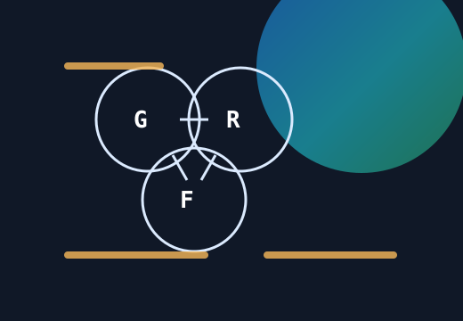
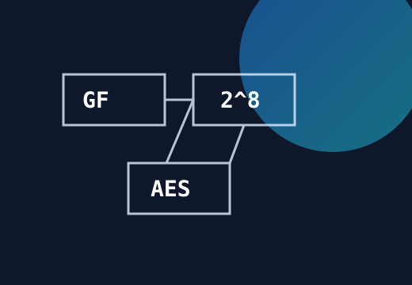
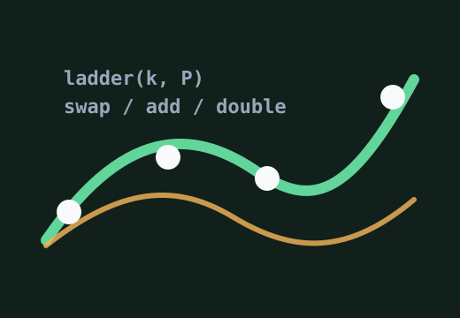
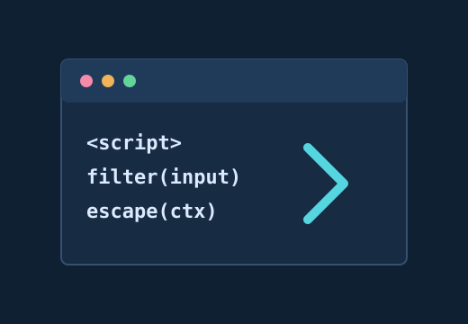

抽象代数基本概念——群、环、域
从群、环、域三个层次梳理代数结构，为有限域、ECC 和密码学题解里的符号建立基础语境。
Crypto / CTF / Algorithm
记录密码学、Web 安全、算法笔记和一些工程实践。
Latest Posts

从群、环、域三个层次梳理代数结构，为有限域、ECC 和密码学题解里的符号建立基础语境。

从多项式表示、不可约多项式到 AES 中的乘法实现，给有限域运算搭一个可复用的心智模型。

以标量乘法为线索，理解恒定时间结构、交换更新和椭圆曲线实现里的安全细节。
用分块、填充和查表攻击推导出明文恢复流程，把“看起来玄学”的攻击写成稳定脚本。

按上下文整理 payload 变形、编码策略和浏览器解析差异，方便比赛时快速定位入口。
没有找到匹配的文章。
Timeline